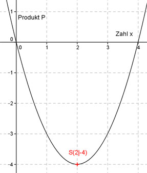

Aufgabe 108 Für welche Zahlen, von denen eine um 4 kleiner ist als die andere, ist ihr Produkt am kleinsten? Die größere Zahl sei x, dann ist die kleinere x - 4 P(x) sei das Produkt der beiden Zahlen, abhängig von x PP(x) = x(x - 4) PP(x) = x2 - 4x Dies ist die Funktionsgleichung einer nach oben geöffneten Normalparabel, deren tiefster Punkt der Scheitelpunkt ist. PP(x) = x2 - 4x Quadratische Ergänzung: PP(x) = x2 - 4x + 4 - 4 mit x2 - 4x + 4 = (x - 2)2 PP(x) = (x - 2)2 - 4 Scheitelpunkt abgelesen: S(2|-4) Die Scheitelpunktkoordinaten bedeuten: Die größere Zahl ist x = 2 und das kleinste Produkt P(2) = 2 * (2 - 4) = -4 Die kleinere Zahl ist (x – 4) = (2 – 4) = -2 